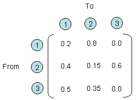

| Stochastics |
|
I have several example that I like for Matrix. Some of the examples, I like them in terms of Modeling which means 'converting a real life problem into a matrix format' and some of the examples, I like them in terms of visualization of the matrix. This example is the one I like in terms of modeling.
Let's say you have three different entities and all of these three entities interact each other. Every time they interact each other, it gives some portion of what it has to another states and it gets some portioin from other entities. One example with a specific number is as follows. For example, if you look at the entity (2) and entity(1). You would see that these two entities gives something to each other and takes something from each other. More specifically, for every round of interaction, entity (2) gives 40 % of what it has to entity (1) meaning that entity (1) takes 40 % from engity (2) and entity (1) gives 80 % of what is has to entity (2), meaning entity (2) takes 80% from entity (1).
If you describe the relationship between each entity verbally as I described above, you would notice that very soon it gets very complicated and you would forget what you described about entity (1),(2) when you describe entity (2),(1). Furthermore, in most of real life problems the number of entities being involved in the problem tend to be much more than 3. In this case, it is almost impossible to describe all the possible relationships in verbal form. But if you use the matrix form, you can describe this kind of situation in a very simple manner as follows.
Each row number represents the entities where an arrow (shown above) starts and each column represents the entities where an arrow ends. The number within the matrix represents how much amount of things transfers from an entities to another entities. For example, if you see the point where row (2) and colum (3) meets, you see the number '0.6'. It means that for every round of interaction, entity (2) transfer 60 % of what it got to entity (3). 
OK.. Now I have a matrix representing how each of entities in a system interact each other. So what ? How can I use this matrix ? I said this matrix represents the interactions among each entities for each round of interaction. What if this kind of interaction repeats 100 times ? If entity (1) had 100, entity (2) has 500 and entity (3) has 300, how much they would get after 100 times of interaction ? Can I get the answers to all of these questions from this matrix ? In conclusion, the answer is YES. and then How ? It is simple, just multiply the same matrix 100 times (Matrix multiplication, not a scalar multiplication) and then you would get the answer for this. Again, you don't have to multiply the matrix 100 times by your hand. Just leave it to the computer. Again, converting a real life problem into a Matrix format is your job and doing mathemtical operation for solution finding is not your job. It's computer's job.
Examples on YouTube
Other Links
|